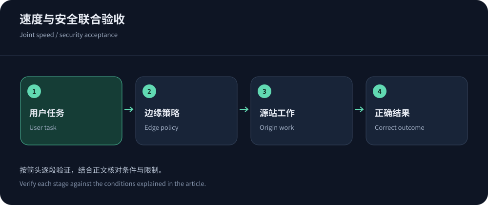
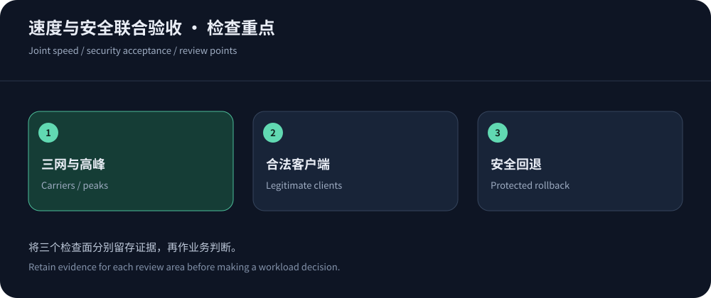

Compare speed and security on the same workflow
Do not combine a static-download ranking with advertised protection capacity and call it a security-performance assessment. Login, search, checkout and downloads must work during ordinary and abnormal conditions. Challenges, mitigation routes and caching interact.
Public information checked on 14 October 2026 supports a shortlist, not measured rankings. Discuss suitable Hong Kong plans with CDN5 and compare alternatives on workflow completion and operability.
Build a carrier matrix that retains failures
Cover major audience regions on Telecom, Unicom and Mobile at normal and peak times. Retain protocol, resolution, edge, cache state, content checks and failures. Report P95 beside failure rates; excluding timeouts can make unreliable delivery look fast.
Inspect critical subresources, cross-origin APIs, certificate chains, IPv6 and WSS. Use mobile-network troubleshooting to isolate failures rather than assigning blanket blocking diagnoses.


Translate security features into observable behavior
DDoS capacity, WAF and bot management address different problems. DDoS documentation and rate rules help distinguish them. Verify tier eligibility, control granularity and log access.
| Workflow | Performance check | Security check |
|---|---|---|
| Public pages/images | Time hot/cold states and verify freshness/dependencies. | Check cache-bypass pressure and legitimate reader/crawler access. |
| Login/accounts | Measure full authentication including redirects/challenges. | Verify identity isolation, counters and shared egress. |
| APIs/callbacks | Observe tails, timeouts, retry amplification and server work. | Validate signatures, quotas and idempotency; avoid incompatible browser challenges. |
| Recovery | Measure service restoration and queue drain. | Keep fallback protected and retire obsolete access. |
Origin isolation prevents bypass
Historical DNS and related services may reveal an origin. Inventory IPv4/IPv6, administration, monitoring and callbacks, then restrict trusted ingress without breaking health checks or exposing a bare-origin fallback.
Verify origin TLS and trust identity headers only through known proxies. Test allowed proxy access, denied bypass and working operations access. Stateful recovery also needs session/write consistency. See the CDN/IP/scrubbing comparison.
Compare provider evidence rather than slogans
CDN5’s published bundles justify asking about Hong Kong eligibility, delivery bandwidth and mitigation routes. YewSafe offers SCDN, Anycast and DDoS products, but unverified local features/prices remain open. Akamai App & API Protector is relevant to enterprise application/API protection.
Avoid compressing different products into an unsupported score. Logs, false-positive handling, origin controls and support matter. Keep documents, written answers and pilot evidence separate.
Turn acceptance evidence into a purchasing decision
Set mandatory gates before preferences. Identity isolation, working callbacks and no origin bypass should not be outweighed by a faster average or nicer console. Leave unmeasured items uncertain instead of assigning invented scores.
Weight audience segments using real business composition and disclose the method. Sparse samples need longer observation. Record review triggers such as persistent carrier failures, missed support commitments or budget overruns.


Keep rollout changes traceable
Pilot a low-risk domain or traffic slice with stable application/cache settings, then introduce security changes separately. Track legitimate completion and origin pressure. Load testing requires owned or authorized environments and agreed limits.
Continue carrier/peak monitoring after launch. If mainland nodes become necessary, reassess China Network requirements. A useful selection record defines review triggers, diagnostic evidence, escalation and recovery.